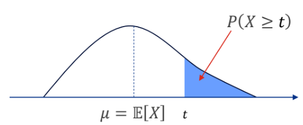
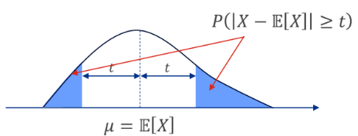
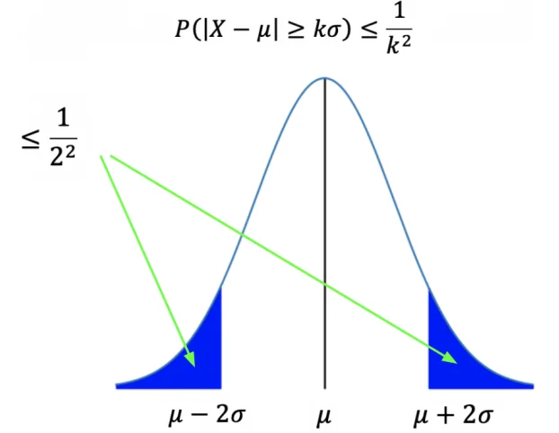

For a non-negative (discrete or continuous) random variable
,
and
,
Proof.

Markov’s inequality
must be non-negative - Counterexample
Let
be a discrete random variable such that
EV is
Let
.
Using Markov’s inequality,
Hence, we get a contradiction
().
Takeaway: Negative numbers can skew the mean, making it aritficially
small.
6.2 Chebyshev’s Inequality
For any random variable
,
and
,
Proof.

Chebyshev’s inequality
6.2.1 Alternative form
Let
,
,
.
With
,
,
meaning 75% of data is within 2 standard deviations from the mean.

-form
of Chebyshev’s inequality
6.2.2 Markov vs Chebyshev’s
inequality
Values of
:
For Markovs’s,
only takes non-negative values, while in Chebyshev’s
can take any value (Squaring the distance from the mean term removes
negative values). Markov’s is concerned with position of
,
while Chebyshev’s cares more about distance from the mean.
Distribution: Markov’s only requires
,
Chebyshev’s requires
and
.
Results: Chebyshev’s gives a better estimate
than Markov’s.
Consider a factory producing light bulbs, with
,
.
We want to find
.
Markov’s Inequality:
Chebyshev’s Inequality:
6.3 (Weak) Law of large
numbers
Suppose
are independent and identically distributed (iid) random variables,
The empirical average of outcomes is
Then
[Variance decreases as we get more samples
()].
Using Chebyshev’s inequality, and for any
,
Since probability cannot be less than 0,
or
Interpretation: For a large number
,
the calculated average
converges to
with absolute certainty. This is because the variance decreases with
increasing number of samples.
6.4 Hoeffding’s Inequality
For independent random variables
,
with
,
then
Note:
As the sample size
or error margin
increase, the negative exponent gets more negative, probability
0.
If the bounds
()
are small, the negative exponent gets more negative, probability
0.
Because of the exponenet term, Hoeffding’s inequality gives a tighter
bound than Chebyshev’s inequality.
(assuming independence of variables).
6.4.0.1 Example
For iid random variables
following Bernoulli distribution,
,
(Chebyshev’s)
,
(Hoeffding’s)
,
6.4.1 Markov v Chebyshev v
Hoeffding
Feature
Markov’s
Chebyshev’s
Hoeffding’s
Feature
Markov
Chebyshev
Hoeffding
Requirements
Variable must be
Non-Negative
().
• Finite Mean
()
and Variance
().
• Data can be unbounded or dependent.
• Variables must be
Independent.
• Variables must be Bounded
().
Parameters Used
Mean
().
Mean
()
+ Variance
().
Mean
()
+ Bounds
()
+ Sample Size
().
What it Bounds
"Prob. that
is huge?" (One-sided tail)
"Prob. that
is far from mean?" (Two-sided distance)
"Prob. that average is far from
mean?" (Two-sided distance)
The Result
Loose (Linear
Decay):
Error drops as
. (Weakest guarantee)
Medium (Polynomial
Decay):
Error drops as
or
. (Solid, but conservative)
Tight (Exponential
Decay):
Error drops as
. (Strongest guarantee)
Best Use Case
When you know almost
nothing (only the Mean) about the distribution.
When data has high
variance or "heavy tails" (e.g., income, stock market).
When data is bounded
(e.g., polls, test scores) and you need high confidence.
6.5 Central Limit Theorem
For a random variable
with mean
and standard deviation
,
the standardisation of
is the new random variable
Note that
has mean 0 and standard deviation 1. Note also that if
has a Gaussian distribution, then the distribution of
is the standard Gaussian distribution
.
Suppose iid random variables
each with mean
and
.
Let
be the average such that
The mean and variance are
We can then standardise
By the Central Limit Theorem,
This means that for large
,
converges in distribution to the standard Gaussian distribution, and the
probability that
is just the area under the standard Gaussian PDF, from
.
So as
,
Central Limit Theorem
6.5.1 Application of CLT - Normal
approximation to binomial
Recall that for a Binomial random variable
,
The problem is that computing this exact probability
becomes extremely hard when
and
are large. The factorials inside the
term grow massively.
Instead, we can see the Binomial variable as a sum of individual
Bernoulli trials.
We define the total successes as
,
where each individual trial
.
For each individual Bernoulli trial:
Because
is a sum of independent trials, we can apply the CLT. By standardising
this sum, the distribution becomes approximately normal, as
,
We can find the probability that number of successes falls within some
lower and upper bounds.
Example
Flipping a fair coin
times, what is the probability of getting between 19,600 and 20,400
heads?
Here, computing the exact binomial PMF is not feasible. We use the
normal approximation.
Let
be the total number of heads. For a fair coin, the probability of heads
is
.
Calculating the mean and s.d. for each trial:
Thus, we have
Solving,
Example A factory produces items with a defective
probability
.
If we inspect
items, what is the probability regarding the number of defective
items?
Let
be the total number of defective items in the sample size of
,
then apply the equation above.
Example If an advertisement has a click through rate
of
,
and the website gets
unique visitors a day, what is the probability regarding the number of
clicks?
Let
be the total number of ad clicks in the sample size of
visitors, then apply the equation above.